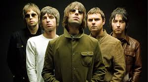
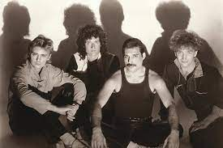

Coldplay es una banda británica formada en Londres en 1996. Está compuesto por 5 integrantes: Chris Martin, Jonny Buckland, Guy Berryman, Will Champion y Phil Harvey. Se conocieron en el University College London y comenzaron a tocar música juntos desde 1997 hasta 1998, inicialmente llamándose a sí mismos Big Fat Noises y luego Starfish.
Oasis fue una banda inglesa de rock alternativo, formada en Mánchester en 1990. En sus inicios, conocidos como Rain (Español: La Lluvia), el grupo contaba en sus filas con el cantante Chris Hutton, el guitarrista Paul Arthurs, el bajista Paul McGuigan y el baterista Daniel Alexander, a los que más tarde se unirían, en 1991, Liam Gallagher en la voz y Tony McCarroll como batería. El último en unírseles fue el hermano mayor de Liam, Noel Gallagher (a petición de su hermano) quien obtuvo el papel de compositor principal, guitarrista principal y cantante secundario.
Queen es una banda británica de rock formada en 1970 en Londres, integrada por el cantante y pianista Freddie Mercury, el guitarrista Brian May, el baterista Roger Taylor y el bajista John Deacon (el cual llegaría un año después al grupo para completar la formación clásica). Sus primeros trabajos estuvieron influenciados por el rock progresivo y el hard rock, pero la banda se aventuró gradualmente en trabajos más convencionales y amigables con la radio incorporando más estilos, como arena rock y pop rock.
